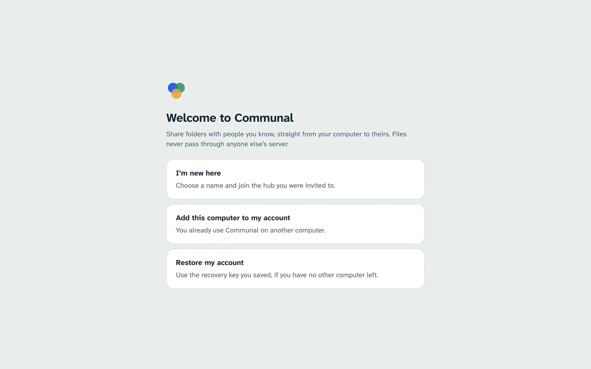
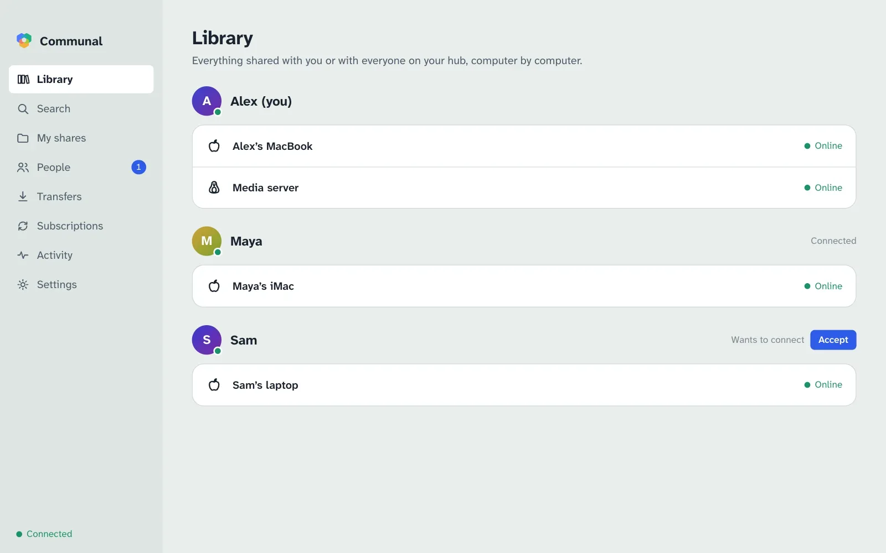
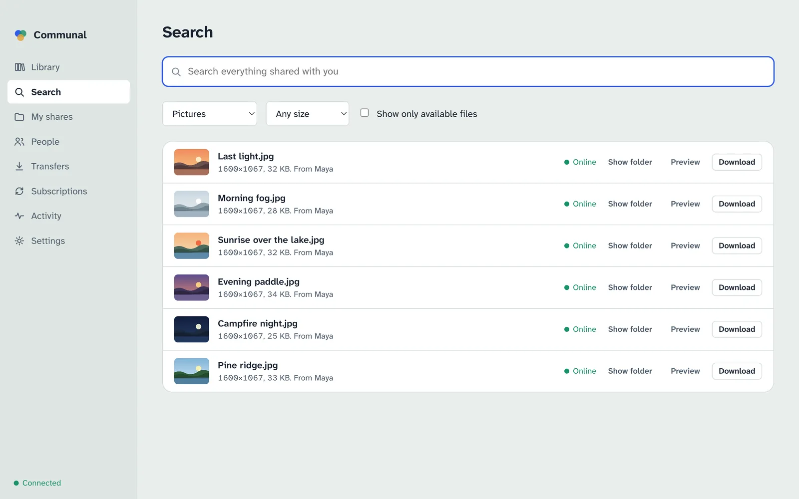
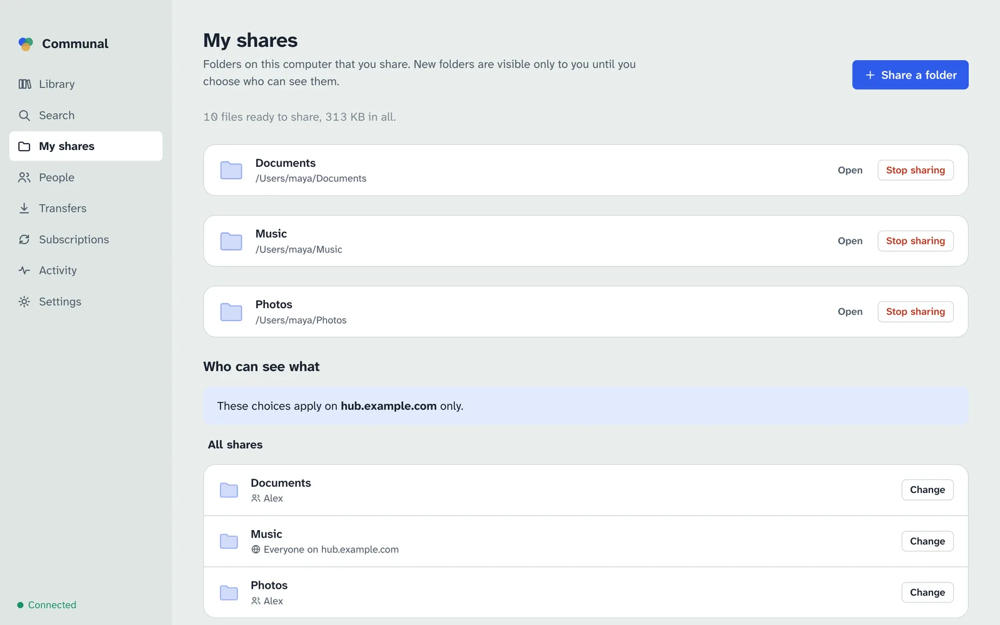
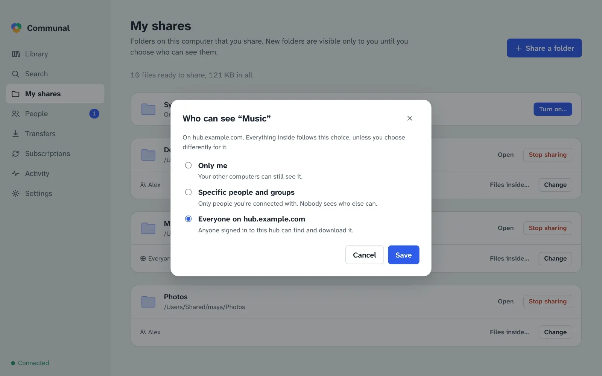
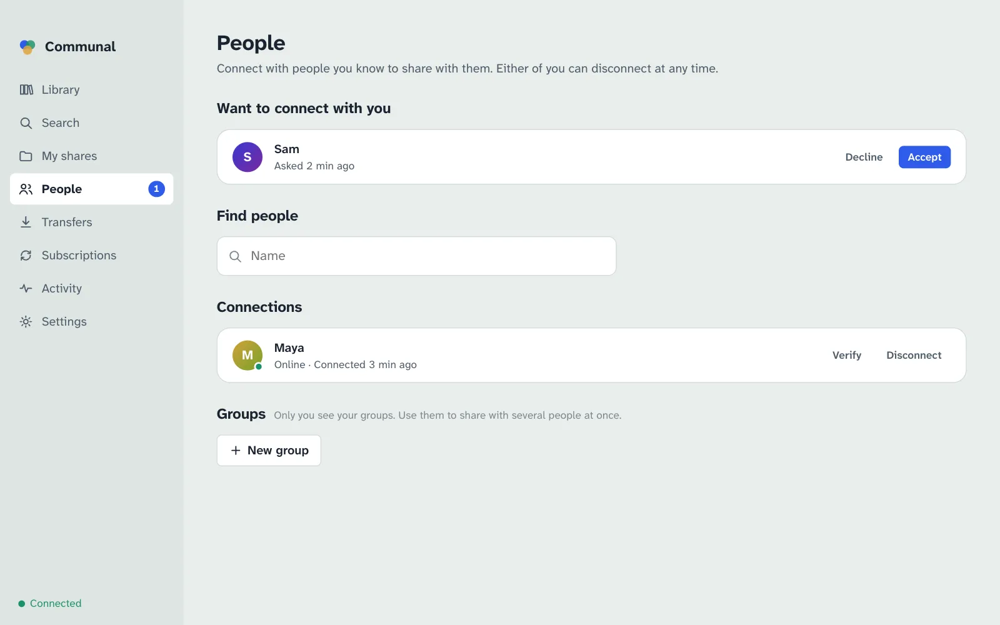
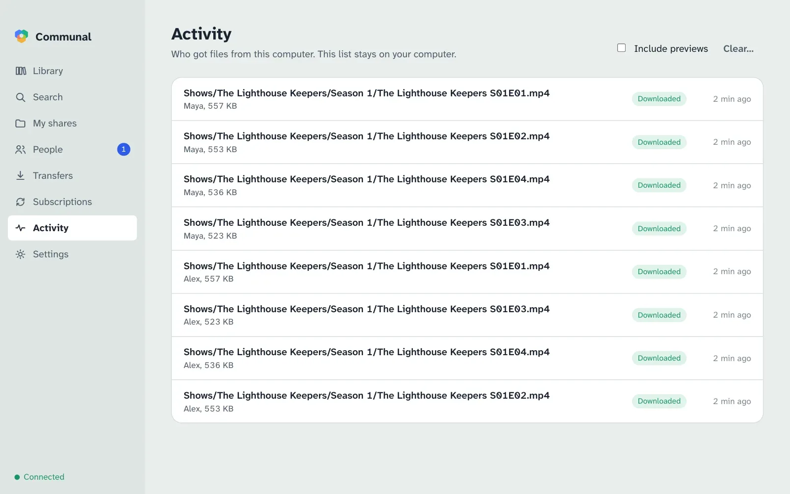

Using the app
Everything the Communal app does, screen by screen.
Install
Download Communal for your computer from the front page and open
it. On a Mac, drag it into Applications. On Linux you can also run
curl -fsSL https://hypnopompia.github.io/Communal/install.sh | sh. Communal
checks for updates itself and installs them the next time you quit; a
Restart to update button appears in the sidebar when one is ready.
The first time it runs, macOS asks whether Communal may find devices on your local network. Choose Allow: Communal talks directly to the computers of the people you share with, including ones in your own home, and asks your router to let them reach you.
First launch

- I’m new here. Choose the name people will know you by, type the hub address you were given, and name this computer. Some hubs let you in straight away; others wait for their admin to approve you, and you can set up your shared folders meanwhile.
- Add this computer to my account. On a computer that already uses Communal, open Settings › Devices and choose Get a code. Type the code here. The other computer then asks you to approve this one: check that the ID it shows matches the one shown here before approving.
- Restore my account. If you’ve lost every computer you used Communal on, use the recovery key you saved (a file and its passphrase, or 24 words). Your shares, connections and access choices come back as this computer rejoins your hubs.
Library
The Library lists everyone whose files you can see, computer by computer, starting with your own. A green dot means the computer is online now; otherwise it says when it was last seen.

Open a computer to browse its shared folders. Switch between Grid and List at the top right.
- Click a file to look at it: pictures and PDF pages open large, text and code show their first page, videos and music play straight from the owner’s computer.
- Double-click a file, or use Download, to save it in your downloads folder (Settings › Downloads). Save to… asks where to put it instead. If that’s inside one of your shared folders, the file is shared like the rest of that folder, so Communal says who will see it and asks first.
- Download folder saves the folder you’re in, with the folders inside it, once. Files you already have aren’t downloaded again.
- Subscribe to this folder follows the folder you’re in (see Subscriptions).
If the computer is offline you can still look around, but downloads wait until it’s back.
Search
Search looks through everything shared with you on every hub at once. Type part of a name:
every word counts, so beach 2019 finds “Beach trip (2019).mp4”. Narrow it by
kind (pictures, videos, music, documents…) or size.

A file that several people have appears once. Show only available files hides files whose computers haven’t been online in the past week, and results from computers that are online come first.
Sharing and access
Open My shares and choose Share a folder. Give it the name others will see; where it is on your computer stays private. Communal prepares each file (and makes previews of pictures, videos and documents) in the background; the progress shows at the top.

A new folder is visible only to you. Under Who can see what, choose Change on a folder or file:
- Only me: your other computers can still see it.
- Specific people and groups: people you’re connected with. Nobody can tell who else has access.
- Everyone on the hub: anyone signed in to that hub can find and download it.
- Same as the folder it’s in: files and folders follow the nearest folder above them unless you choose otherwise.

Access is set separately on each hub. If you’re on more than one, pick the hub at the top of Who can see what: a folder can be public on one hub and private on another.
People and groups
To share with someone in particular, connect with them first. In People, search for their name and choose Connect; they’ll see your request and can accept it. Either of you can disconnect at any time, which ends access granted through the connection straight away.
On several hubs, you connect on each one separately, and so do groups. Someone you know on more than one is still listed once, with a line for each hub.

Verify shows a safety code made from both your keys. Compare it with the one they see, in person or on a call; if they match, nobody is pretending to be either of you.
Groups are your own lists of connections, for sharing with several people at once. Only you see your groups; members don’t see each other through them.
Transfers
Downloads show their progress and how fast each computer is sending. A download from a computer that’s offline waits and starts by itself when it’s back.
If two computers can’t reach each other, Transfers says why (for example a router that blocks direct connections) and what usually fixes it, and on whose side.
Subscriptions
Subscribing to a folder downloads everything in it and keeps it up to date: new files arrive by themselves, including ones added while you were away. When you subscribe, Communal asks whether to delete your copy when the owner deletes a file; the answer is No unless you change it. Copies you’ve changed yourself are never touched, and deleted files go to your trash, not straight away.
In Subscriptions you can pause a folder, change that choice, or unsubscribe (files you already have stay).
Synced folder
A folder that’s the same on all your computers. In My shares, turn on
Synced folder on each computer you want it on (it’s Communal in your
home folder unless you pick another). Only you can see it.
- Files you add, change or delete on one computer follow on the others. Deleted files go to the trash.
- Two computers sync when both are on, directly with each other. Nothing is kept on the hub, so a laptop that was asleep catches up the next time both are on.
- If the same file was changed on two computers before they could sync, the newer one keeps the name and the other is kept beside it as “name (conflicted copy date code)”.
- Turning it off on a computer stops it syncing. Nothing is deleted anywhere.
The synced folder is the folder you share under the name Communal, so sharing
a folder by that name turns syncing on too. A hidden .communal-sync file in
it lets your other computers find it even when it’s empty.
Activity
Activity lists who got which of your files and when. This list is kept on your computer only; the hub never sees it.

Settings
Account
Shows your fingerprint (the code people’s safety codes come from). Save recovery key exports a file protected by a passphrase, or 24 words to write down. Keep it somewhere safe and private: whoever has it can use your account. Only the first computer you set up (or one you restored) can save it.
Devices
Your computers. Get a code adds another one. Remove signs a lost or stolen computer out of every hub and stops other people’s computers trusting it; it can’t be undone.
Hubs
The hubs you’re on, whether each is connected, and Join another hub. Your existing shares aren’t listed on a new hub until you choose so in My shares.
On a hub you administer (the first person to join a hub is its admin), Manage opens its people and their computers, who’s connected to whom, the admin log, and its settings: its name and whether new people wait for you to let them in. You can let people in, ban and unban them there. A banner tells you when someone is waiting. Admins see how much each computer shares, never file names, groups or who can see what.
Network
How easy this computer is to reach, as seen from each hub, and whether your router opened a port for Communal. Check again after changing your network.
Sharing speed
Limit upload speed and how many people download from you at once, or share only within your home network.
Downloads
The folder Download saves into. Save to… next to any Download picks another folder for that file.
Storage
How much space previews of other people’s files may take, and Clear previews.
AI agents
Lets the command line and AI assistants such as Claude control this app while it’s open. See AI agents.
Running in the background
Closing the window doesn’t stop sharing: Communal keeps running so others can download from you. Quit from the menu bar icon (or the taskbar icon on Windows and Linux) or with ⌘Q.